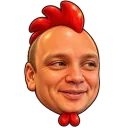
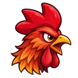
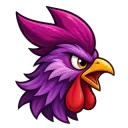
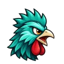
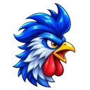
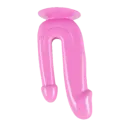

Ильсур-Пакман-Членоед
Ильсур — радужный непоседа с золотым сердцем и безупречной навигацией. Он идёт своим маршрутом, собирает угощения и не позволяет токсичным бывшим испортить ему вечер.
Кто тут на танцполе
-

Ильсур - Главный герой и икона прайда. Уверенно идёт по лабиринту, выбирает свой путь и собирает всё, что блестит и вкусно выглядит.
-

Красный преследователь - Бывший, который всё ещё пишет «ты где?». Упрямо идёт прямо за Ильсуром, но личные границы туннелей уважает.
-

Фиолетовый перехватчик - Любит эффектные выходы и пытается предугадать следующий шаг звезды вечера. Иногда планирует слишком драматично.
-

Бирюзовый патрульный - Самоназначенный модератор танцпола: обходит лабиринт по маршруту и следит, чтобы никто не нарушал прайд-протокол.
-

Синий засадник - Король внезапного камбэка. Любит караулить там, где его не ждут, и единственный из преследователей умеет проскальзывать сквозь туннели.
Как двигаться
На компьютере: стрелки или WASD. Поворот можно задать заранее — Ильсур свернёт на ближайшем свободном перекрёстке.
На телефоне: держи экран вертикально и жми экранные стрелки.
Верхний и нижний туннели соединены друг с другом, как дальняя переписка. Левый и правый края тоже связаны. Туннелями пользуются Ильсур и Синий засадник; остальные преследователи остаются по свою сторону границы.
Что собирать
- Члены
- Обычные угощения лабиринта. Каждый приносит 1 очко.
-

Дилдо - Успей поймать за 20 шагов игрока. Если опоздаешь, он станет обычным членом (+1 очко). За поимку Дилдо даёт 20 очков, а враги отступают на 18 игровых тиков. Каждые 3 дилдо пополняют запас жизней.
Карты, жизни и скорость
- На каждой карте собери все члены — тогда откроется следующая. Всего семь разных карт, после седьмой круг начинается снова.
- Врагов становится больше: 1 на первой карте, 2 на второй, по 3 на картах с третьей по шестую и 4 на финальной.
- Столкновение с врагом отнимает жизнь и возвращает Ильсура к старту. У тебя пять жизней; Дилдо помогает пополнить запас.
- После полного прохождения семи карт круг даёт 500 бонусных очков, а темп немного растёт. Скорость ограничена, так что радуга не превращается в нечестный скоростной квирк.